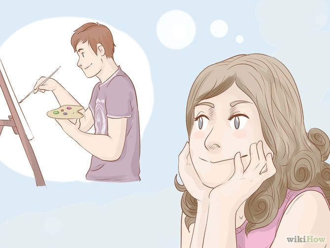
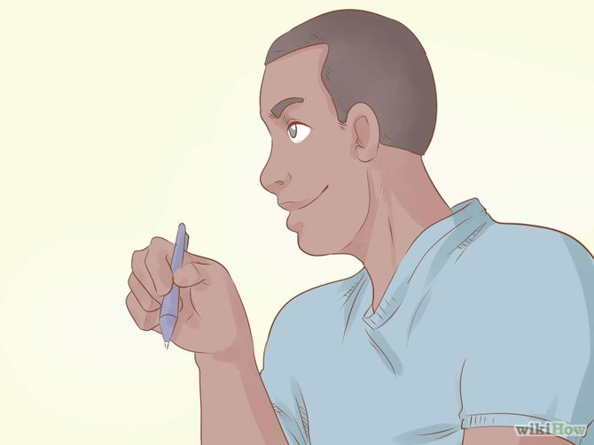

How to Officially Have a Crush on Someone in 6 Steps
-
Find someone you are physically attracted to. Whether it's the hot guy or cute girl in your class, make sure it's someone that you can actually have a crush on. Avoid the obnoxious boy that drives you insane in class, or the annoying girl that points out every mistake you make.
-

Point out a talent or quirk to yourself (ex: drawing, singing, dancing, sense of humor) that you find attractive. It doesn't have to be just one - you can point out as many to yourself as you like. If the person you chose to have a crush on doesn't have a talent, either move on to another person or look really hard for one.
- You could also make a positive list of their personality in your mind, or write it down. However, beware that writing down the list risks betraying your secret, as the list could fall into the wrong hands. It's best to keep all this in your mind, where no one can see.
-
Give your crush a nickname in your mind. For example: if your crush draws, call him/her "Da Vinci". If they jump really high, call them "Pogo". However, remember not to call them that out loud - this is all supposed to be kept in your head. If you do call them by your chosen nickname for them, they may give you a weird look or appear uncomfortable. Or, they may just laugh.
-
Think about your crush all the time and how good they are at their talent. Run the positive list through your head all the time whenever you see or remember them. You can either tell all of your friends or keep it to yourself till your crush on that person is official. Blush like a fool!
-

At the end of the day or on the way home from school, think about all the positive things that happened with your crush today. For example: if your crush chose you as their science partner, think of that. Or perhaps you had a good conversation with your crush. Think about how cute your crush was, the look on his/her face, and the event. Run it through your mind as much as you like, and consider keeping a journal to write all those things down and remember them!
-
Flirt a little. If you think your crush likes you back, flirt and tell your trustworthy friends about everything that goes on. They may give you good advice and help you build a good relationship with your new crush! Plus, it's fun to have someone to talk about your crush with.
Tips
- If the thought of your crush didn't make you giddy, then you may not have a crush on them.
- Sometimes the best nicknames can be random, such as "cupcake" or "chair." The first thing that comes to mind is a good thing to use.
- When it comes to talking to your friends about your crush, make sure that he or she can be trusted.
Warnings
- Finding out someone is not interested in you can be tough. But, move on. There are plenty of guys and girls out there.
- Avoid finding someone who is married or in a current relationship. It may cause mood swings or depression.
- Crushes are supposed to be fun! Try not to get your heart broken.